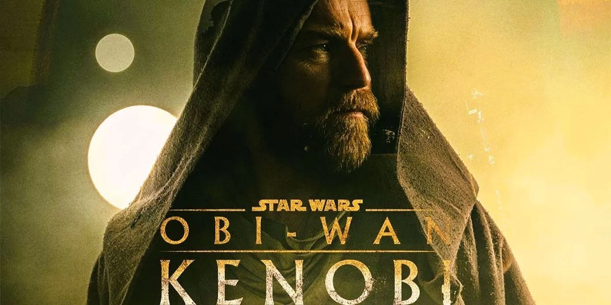

What do I think of Obi-Wan Kenobi so far
June 14, 2022
It's no suprise that I'm a Star Wars fan. And when I saw the first trailer for Obi-Wan Kenobi in March, I cried.
Link to the trailer here: https://www.youtube.com/watch?v=TWTfhyvzTx0

TL:DR; Too Long Didn't Read
I'm thouroughly enjoying Obi-Wan Kenobi. I needed more Obi-Wan and Anakin in my life. This is a great appertizer for more Star Wars content. Of course, there are questions regarding the CGI and the Plot, but who am I to complain! We've got Ewan McGregor and Hayden Christensen back to play their iconic characters! So far, if I'd score the show I'd give it a 5/5! I am soaking up every second of screentime I get for Obi-Wan Kenobi!
Why did I cry?
Because Obi-Wan Kenobi was my favorite Jedi! I've grown up watching Star Wars, I was born in 1996 for context. I, like most of us, were eagerly waiting the release of MORE STAR WARS when Episodes 1-3 came out.
Episode 1 released on May 19, 1999, I was 3 years old. So, obviously, I did not see that movie in theatres.
Revenge of the Sith Premier
However, I did go see Episode 3: Revenge of the Sith on RELEASE NIGHT May 19, 2005! I was 9 years old, and I went to see it with my father and my brother at Midnight for the Premier!
Back then, at least to my recollection, Premier Night and Movie Releases occured on the same day, not like they are today with showings for new movies occuring seemingly days before release.
So, the premier of Episode 3: Revenge of the Sith. It's Midnight and I'm 9 years old, and we are sitting in the most covetting row in the theatre... the front row.
My Favorite Star Wars Memory
The Premier with my father and brother has solidified Star Wars in my heart as one of my all-time favorite series. The Episode 3 Premier with my father and brother was one of the best days of my life. At one point my dad fell asleep, and I had to wake him up..
I will always remember the premier, and I adored Revenge of the Sith! It was amazing! Obi-Wan and Anakin battling it out, the creation of Darth Vader, the creation of Darth Sidious as we know him, the creation of Luke and Leia, the betrayal of Order 66! All of it, Episode 3 was an incredible Star Wars Movie!
I thouroughly enjoy all the movies, and recently I touted Episode 9: The Rise of Skywalker as my favorite Star Wars Movie, and that got some flack from my friends.
The Obi-Wan Kenobi Show
I have been craving more Obi-Wan and Anakin! I love Star Wars, and I drink up any new Star Wars content like I'm a fish looking for water. So, obvioulsy, I was looking extraordinarily forward to the realease of the Obi-Wan Kenobi show!
And Episode 1 and 2 of Obi-Wan Kenobi release, and my jaw is firmly planted on teh floor. I can't believe it. It's Ewan McGregor back as Obi-Wan Kenobi! But, of course, it's the first episode in a six episode series so we must start somewhere.
Where do we start?
Obi-Wan is not the same Obi-Wan as we see in A New Hope or Revenge of the Sith. He's a bit hardended and has a bit of PTSD from what happened just 10 years ago.
Now this show, I can't talk about it without talking about the marketing. And this show was marketed hard. And when I say this show, I really mean Hayden Christensen and Ewan McGregor.
Hayden and Ewan Out on the Town
Disney took Hayden and Ewan out EVERYWHERE THEY COULD.
- BBC: (https://youtu.be/eBydkkZtlPI)
- Vanity Fair: (https://youtu.be/kWpCRYBq6kM)
- Jimmy Fallon: (https://youtu.be/IOk_QzEgY2Q)
- LADbible TV: (https://youtu.be/SDCMos-4QQE)
That really took a little bit of the reveal of Hayden / Darth Vader in the show away from me. I was looking forward to going in blind, but that was nearly impossible.
Obi-Wan Kenobi Show
This show is absolutely awesome! I love the combat, the characters, the storm troopers, the flash backs, the light sabers.. oh boy the light sabers!
Real Light Sabers
I am absolutely obsessed with these new light sabers that are physical props that emit light.
That really adds a physical element to the screen. It works really well when it's dark on screen and the light saber lights up. I think that might be one of the main reasons why I love this show. The light sabers being physical and heavy really make this show visceral.
Darth Vader is...
Darth Vader is AWESOME! It's so good, as with the character of Obi-Wan, to see these characters on screen again! It's been too long!
Darth Vader is menacing. He is a powerhouse, and absolutely terrifying! It is so good to see him again!
Final Thoughts
Obi-Wan Kenobi is an awesome show, if you're a Star Wars fan! I wouldn't recommend watching this if you've never watched Star Wars before. But that is no fault of the show at all, that is the nature of Star Wars.
There are more than 40 years of content to get through with movies, comics, books, series, and more. It is difficult enough to watch one thing at a time, but with Star Wars, you're set for a long time.